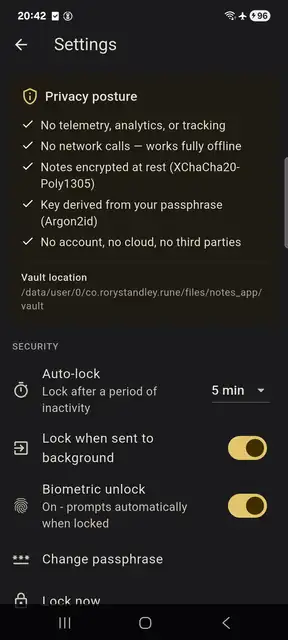

Rune
قراءة وكتابة
Rune is a calm, fast notes app for people who don't want to trust an app with their data. Your notes never leave your device, they are encrypted at rest, and the app makes no network connections at all. There is no account, no cloud, and no sign-up. Privacy by construction, not by promise: * No tele
✓ ترخيص مفتوح (GPL-3.0-or-later) · آخر تحديث: 2026-10-14
0.5.7الإصدار
51.6 MBالحجم
GPL-3.0-or-laterالرخصة
Open in Kanzتحميل APK (51.6 MB)
Download APK
SHA-256: 09e9d5105d6a5c2b9bd89043a26a76bda3f01142081675df0baeb72061b4b589

امسح الكود لفتح صفحة التطبيق
Scan to open this app page
لو كنز مش متثبت عندك: نزّل متجر كنز.
Not installed? Get the Kanz store.